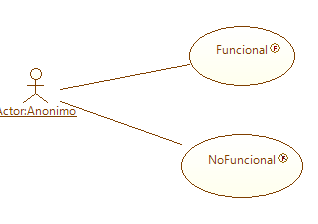

Este perfil es el encargado de la
recolección, organización, refinamiento y seguimiento a requerimientos. La Figura 1 muestra un ejemplo de etiquetado sobre un diagrama de Casos de Uso.
Los siguientes patrones de requerimientos pueden ser etiquetados a
través de este componente:

Figura 1. Etiquetado de Ingeniero de Requerimientos en Casos de Uso
- Requerimiento Funcional: Este es un
requerimiento propio
del modelo del negocio. Estos requerimientos son, por lo general,
directamente elicitados del cliente y serán expresados en
funcionalidades visibles del sistema.
- Requerimeinto No Funcional:
Características intrínsicas del
sistema de software a desarrollar, tales como el desempeño, usabilidad,
seguridad, entre otras. Estos requerimientos son implícitos en las
necesidades expresadas por los usuarios del sistema.